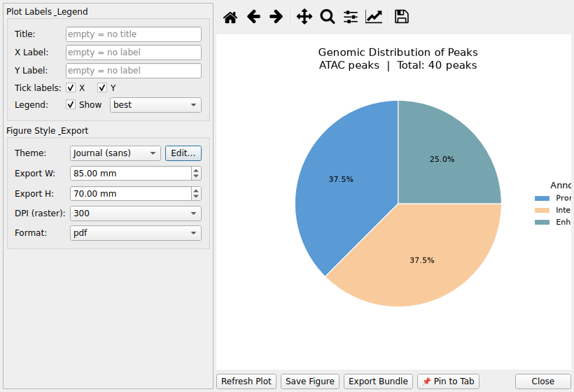

13. ATAC-seq Analysis¶
CMG-SeqViewer supports ATAC-seq Differential Accessibility (DA) results
in addition to RNA-seq DE data. The application automatically detects ATAC-seq
data on load based on the presence of a peak_id column.
13.1 Loading ATAC-seq Data¶
Use File → Open ATAC-seq Dataset… or drag-and-drop an Excel/Parquet file. Supported formats match the standard DESeq2 DA output (HOMER-annotated):
| Standard column| Accepted input names
| peak_id| peak_id, peakid, peak_name, interval
| chromosome| chr, chromosome, seqnames
| peak_start / peak_end| start / end, startpos / endpos
| nearest_gene| gene_name, nearest_gene, symbol
| annotation| annotation, peak_annotation, feature
| distance_to_tss| distancetotss, distance_to_tss, distance.to.tss
| base_mean| baseMean, base_mean, conc
| log2fc| log2FoldChange, log2fc, logFC
| adj_pvalue| padj, adj_pvalue, FDR
| direction| direction, regulation
A peak_width column is automatically calculated as
peak_end − peak_start.
13.2 Column Display Levels¶
Use View → Column Display Level to adjust visible columns:
-
Basic: peak_id, chromosome, peak_start, peak_end, nearest_gene
-
Stat: Basic + base_mean, log2fc, pvalue, adj_pvalue, direction
-
Full: Stat + lfcse, annotation, distance_to_tss, gene_id, peak_width
13.3 ATAC-seq Filtering (Statistical tab)¶
When an ATAC-seq dataset is active, the ATAC-seq Filtering section becomes visible below the standard DE filters:
-
Annot: Filter by genomic annotation category (e.g., Intergenic, Intron, Promoter-TSS). Categories are populated automatically from the loaded data.
-
|TSS| ≤: Keep only peaks whose absolute distance to the nearest TSS is within the specified number of base pairs.
-
Peak Width: Filter by minimum and/or maximum peak width (bp).
Statistical filters (adj. p-value, |log2FC|, direction) also apply to ATAC-seq data.
13.4 Gene List Filtering¶
Paste gene symbols (nearest gene names) into the Gene List tab, one per line.
The filter matches against the nearest_gene column.
13.5 ATAC-seq Visualizations¶
When an ATAC-seq tab is active, three dedicated plots are available under Visualization:
Genomic Distribution¶
-
Pie chart of peak annotation categories (Intergenic, Intron, Promoter-TSS, Exon, TTS, …)
-
HOMER/ChIPseeker annotation strings are normalized to broad categories automatically
-
Shows peak count and percentage per category
TSS Distance Plot¶
-
Histogram of peak distances to the nearest TSS
-
Default range: ±50,000 bp; configurable with Range and Bins controls
-
Reference lines at 0 bp (TSS), ±2 kb, ±5 kb
-
Summary bar: % peaks within ≤2 kb and ≤5 kb from TSS
MA Plot¶
-
X axis: log₂(base mean accessibility); Y axis: log₂ fold change
-
Points colored by regulation direction (Up / Down / Not Significant)
-
Configurable adj. p-value and |log2FC| thresholds
-
Gene label annotation: Top N by |log2FC|, or custom gene list
-
Hover tooltip shows nearest_gene, log2FC, base mean, adj. p-value
The standard Volcano Plot also works with ATAC-seq data (uses log2fc and adj_pvalue columns).
13.6 TF Motif Enrichment¶
Visualizes transcription-factor motif enrichment results from
HOMER (knownResults.txt) or MEME AME
(ame.tsv) as a horizontal bar chart.
-
Load via File → Open TF Motif Results... — this creates a dedicated TF Motif dataset tab (separate from the ATAC DA tab)
-
With that tab active, open Visualization → 🔓 ATAC-seq → 🔡 TF Motif Enrichment Plot
-
Top N motifs: how many TFs to show, ranked by −log₁₀(p-value)
-
Q-value cutoff: only motifs at/below this q-value are plotted
-
Show % bar: overlays the percentage of target peaks containing each motif on a secondary axis
-
You can load a second (e.g. DOWN) result alongside the first to get a side-by-side UP vs DOWN comparison plot
-
Export Data saves the plotted table (Excel/CSV)
13.7 TF Footprint (TOBIAS BINDetect)¶
Visualizes TOBIAS BINDetect footprinting output (bindetect_results.txt)
as a TF activity scatter plot.
-
Load via File → Open TF Footprint Results... — creates a dedicated TF Footprint dataset tab
-
With that tab active, open Visualization → 🔓 ATAC-seq → 👣 TF Activity Plot (Footprint)
-
X axis = condition 1 mean footprint score, Y axis = condition 2 mean footprint score (condition names come from the file's metadata); points above the diagonal (y=x) are more bound in condition 2, below are more bound in condition 1
-
P-value cutoff and |Change| ≥ control which TFs are highlighted/colored as significant
-
Label top N annotates the top TFs by |change|; Dot size and Show diagonal are also adjustable
-
Export Data saves the plotted table
13.8 chromVAR TF Activity¶
Visualizes chromVAR differential TF activity (deviation z-scores) results.
-
Load via File → Open chromVAR Results... (CSV/Parquet
diff_tfoutput) — creates a dedicated chromVAR dataset tab. Loading more than one chromVAR result enables a multi-condition mode. -
With that tab active, open Visualization → 🔓 ATAC-seq → 🧬 chromVAR TF Activity Plot
-
View mode:
-
Volcano — X: delta z-score, Y: −log₁₀(padj)
-
Scatter (base vs compare) — X: base/control condition z-score, Y: comparison condition z-score
-
Multi-condition Heatmap (only when 2+ chromVAR datasets are loaded) — TF × condition matrix of delta z-scores
-
padj cutoff and |delta| ≥ control significance highlighting; Label top N and Dot size adjust display; Heatmap top N TFs applies only in Heatmap mode
-
Hovering a point in Volcano/Scatter mode shows TF name, motif ID, delta, and padj
13.9 Annotation Column Explained¶
ATAC-seq peaks are annotated with a genomic context string (HOMER format):
-
annotation— the gene body that the peak physically overlaps (e.g., “intron (ENSMUSG00000097836, intron 2 of 4)”) -
nearest_gene+gene_id— the gene whose TSS is closest to the peak center (used for regulatory interpretation)
These can differ: a peak may overlap an intron of a large gene (annotation) while
the nearest TSS belongs to a different gene (nearest_gene). For downstream analysis
(e.g., gene list filtering), nearest_gene is used.
13.10 End-to-end workflow example (pairwise ATAC-seq)¶
A concrete round trip with a pairwise ATAC-seq experiment (e.g. Chronic_200uM vs Control):
-
Load the peaks: File → Load Data... →
final_da_result.xlsxor a peaks parquet (peak_id/chr/start/end/nearest_gene columns). The type is detected automatically as ATAC-seq. -
Set display level: switch the column display level to e.g. Full to see peak-level stats alongside annotations (Annotation/Gene/Peak tabs).
-
Filter (Filter Panel → Statistical tab): FDR < 0.05, direction UP/DOWN, log2FC threshold — the filter applies to
adj_pvalue/log2fc/direction.

-
Explore the peak-centric views: Visualization → Genomic Distribution and TSS Distance to spot promoter enrichment; Integrated Volcano to combine RNA+ATAC significance in one plot.
-
Regulatory follow-ups on filtered peaks:
-
Analysis → TF Motif Enrichment — motif discovery on differentially accessible peaks.
- Analysis → TF Footprint — TOBIAS BINDetect-style footprints at TF motifs.
-
Analysis → chromVAR TF Activity — per-sample TF activity from the filtered peak matrix.
-
Export the filtered tab or the motif/footprint tables (CSV/Excel/Parquet).
For cross-modal concordance (ATAC + RNA), see 14. Multi-Omics Integration.
See also: User Guide · FAQ · 14. Multi-Omics Integration